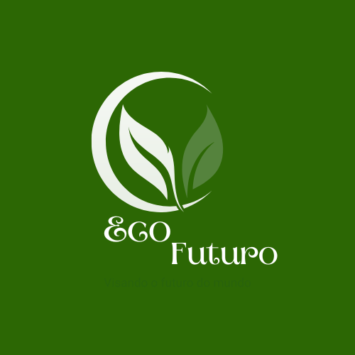

Desenvolvimento sustentável é um conceito sistêmico que se traduz num modelo de desenvolvimento global que incorpora os aspectos de um sistema de consumo em massa no qual a preocupação com a natureza, via de extração da matéria-prima, é máxima. Foi usado pela primeira vez em 1987, no Relatório Brundtland, um relatório elaborado pela Comissão Mundial sobre Meio Ambiente e Desenvolvimento, criada em 1983 pela Assembleia das Nações Unidas. A definição mais usada para o desenvolvimento sustentável é: “ O desenvolvimento que procura satisfazer as necessidades da geração atual, sem comprometer a capacidade das gerações futuras de satisfazerem as suas próprias necessidades, significa possibilitar que as pessoas, agora e no futuro, atinjam um nível satisfatório de desenvolvimento social, econômico e de realização humana e cultural, fazendo, ao mesmo tempo, um uso razoável dos recursos da terra e preservando as espécies e os habitats naturais.